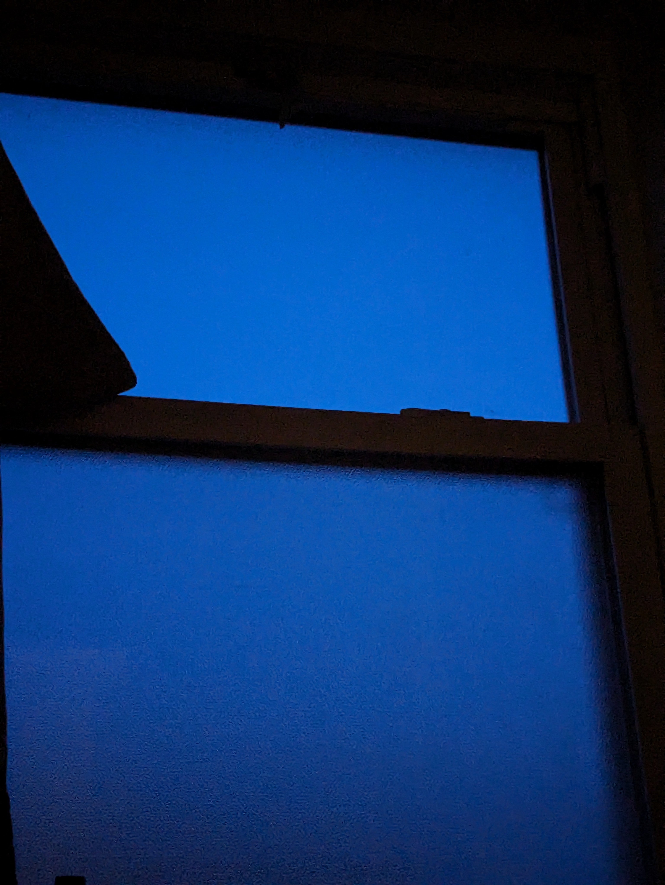

Narrative,
New Media
& Gaming
From the course catalogThis course addresses the ways in which we tell stories in the digital age. Through exploring storytelling in social media, mobile contexts, and gaming, students in this course will experience a range of different narratives in many types of digital media, such as interactive online stories, podcasts, and video games. We examine forms of digital storytelling within media, marketing, and education, with opportunities for students to research, participate within, and to create original narratives as they share their own stories in a variety of media.
I'm interested in making games and writing, but I have limited experience combining the two interests. This page collects the projects I build for the course, attempting to address that gap.